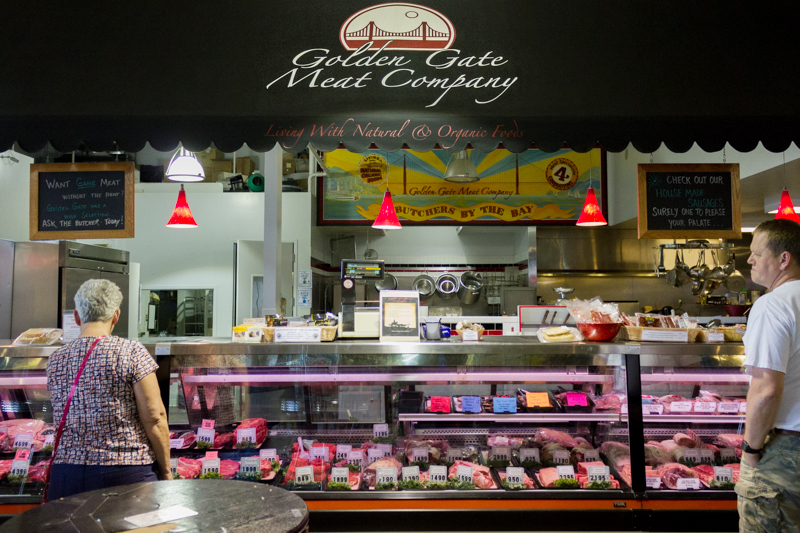

 Golden Gate Meat Company is a family-owned, full service butcher shop that was founded in San Francisco in 1977. With their wholesale business flourishing, it was time to open a retail shop for the public at the Ferry Building Marketplace. The company’s motto is “Service with quality, the old-fashioned way.” Together, “Chef” Chris Offenbach, his wife Margo and their family offer the public the same fine products that they have offered to the trade for the past 25 years. Their butcher shop and charcuterie carry only natural and organic meats featuring Golden Gate’s Own—beef, along with local purveyors of veal, pork, lamb, poultry, wild game, offal, and smoked meats. They have a visible dry aging room for aging beef and local lamb for up to 21 days.
Golden Gate Meat Company features daily lunch and dinner specials. The shop carries imported and domestic prosciutto along with its own line of specialty bacon, jerky and house cured pancetta. Homemade dry rubs, sauces, and seasonings are sold under the company’s private label. Turkeys, prime rib, leg of lamb, crown roasts of pork or lamb, and hams are available for holidays. With their culinary expertise, the folks at Golden Gate Meat are always ready with delicious answers to the question, “What’s for dinner?”
Monday thru Friday: 6:30–7
Saturday: 7–5:30
Sunday: 11–5
(415) 983-7800
Marketplace Shop #13
View Location